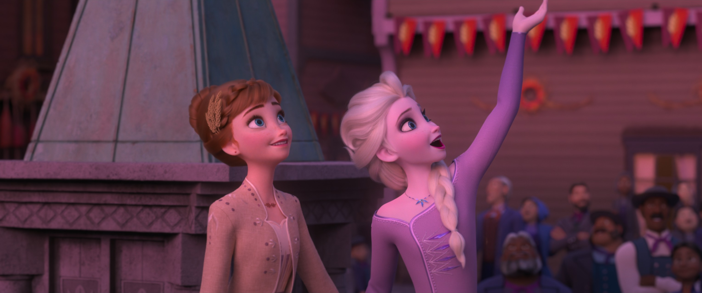

自由 · 不是逃离
📖 这一页讲什么
「自由」是艾莎最容易被误读的主题。北山那首《Let It Go》听起来像自由，其实只是逃离。真正的自由，要等到她学会「不躲」。这一页拆解「伪自由」与「真自由」的区别，以及艾莎如何从「逃离的自由」走向「面对的自由」。


🏃 北山的「伪自由」
《Let It Go》里艾莎唱「the fears that once controlled me can't get to me at all」（那些曾经控制我的恐惧再也无法触及我），可下一秒她就想起山下还有王国与妹妹。她以为甩掉王冠就是自由，实则只是把恐惧换了个地方——从「怕伤别人」变成「怕被当怪物」。北山的「自由」是逃离式的：她离开了让她恐惧的环境，但恐惧本身并没有消失，只是暂时被「没有人看见我」的安全感掩盖了。这就是为什么《Let It Go》之后，艾莎仍然会被恐惧驱动——她建了冰宫，却把自己关在了另一座「城堡」里，只是这座城堡是她自己建的。
🌬️ 「No rules for me」的幻觉
《Let It Go》中艾莎唱「No right, no wrong, no rules for me / I'm free!」（没有对错，没有规则，我自由了！）。这句话听起来很解放，但仔细想，它其实是一种「逃避式自由」——真正的自由不是「没有规则」，而是「我选择遵守哪些规则」。艾莎在北山说「没有规则」，是因为她逃离了社会，不需要面对规则。但当她回到阿伦黛尔，她仍然需要面对规则、责任、他人的目光。如果自由只能在「没有人的地方」存在，那它就不是真正的自由——真正的自由是「在人群中仍然能做自己」。
💬 「I don't care」的悖论
「I don't care what they're going to say」（我不在乎他们会说什么）是《Let It Go》中最有力量的一句歌词，也是最暴露艾莎真实状态的一句。一个真正不在乎别人评价的人，不会需要宣告「我不在乎」——宣告本身就是一种「在乎」的证明。艾莎需要大声唱出来，是因为她需要说服自己。这不是批评——这是人之常情。当一个人被压抑了十几年，她需要一个「宣告」的时刻来确认自己的转变。但这个宣告只是起点，不是终点。真正的「不在乎」不需要唱出来，它体现在日常的选择中。
🧭 真正的自由：不是逃离，是面对
真正的转折发生在地牢与冰封之后：当艾莎不再逃、不再藏，而是站出来承担、去爱、去被爱，她才获得不被恐惧定义的自由。自由不是「没有责任」，而是「我选择面对，而非躲避」。F1 结尾，艾莎回到阿伦黛尔，打开城门，用魔法为所有人创造冬天的乐趣——这才是真正的自由：她不再需要逃离人群才能做自己，她可以在人群中、在责任中、在被注视中，仍然是那个会下雪的女孩。自由不是「没有人管我」，而是「我选择如何回应管我的人」。
🌲 F2：从「女王的自由」到「精灵的自由」
F2 中，艾莎的自由主题进一步深化。作为阿伦黛尔的女王，她拥有权力和地位，但她仍然感到「不自由」——因为她隐约觉得自己不属于这里。「Every day's a little harder as I feel my power grow」（每一天都更难一些，因为我感到自己的力量在增长）不仅是力量增长的负担，也是「这个身份装不下我」的窒息感。当她最终选择成为第五元素精灵，她获得了一种新的自由——不是「逃离责任」，而是「找到适合自己的责任」。她不再是「勉强做女王的精灵」，而是「自然地做精灵的精灵」。自由的终极形态，是「成为你本来就是的人」。
💫 自由的终点
F2 结局，艾莎以第五元素精灵的身份自由地活在森林与人间之间——这一次，她既不躲王国，也不躲自己。自由，终于从一句歌词，变成一种活法。她可以随时回到阿伦黛尔看安娜，可以在森林里与四灵共处，可以用魔法造雪、造冰、造桥——她不再需要「逃离」才能自由，因为她已经「成为」了自由本身。这是艾莎弧光最圆满的终点：从「被恐惧囚禁的女孩」到「逃离人群的伪自由者」到「在责任中做自己的女王」到「成为自由本身的精灵」。自由不是一个地点，而是一种存在状态——当你不再需要逃离任何东西，你就是自由的。
📚 自由的哲学：积极自由与消极自由
艾莎的自由弧光恰好对应了哲学上「消极自由」与「积极自由」的区分。消极自由是「免于干涉的自由」（freedom from）——艾莎在北山获得的就是这种自由：没有人管她、没有人看她、没有人要求她。但消极自由是不完整的，因为它只能在「没有人」的地方存在。积极自由是「去做某事的自由」（freedom to）——艾莎在 F1 结尾获得的是这种自由：她可以选择用魔法帮助别人、可以选择打开城门、可以选择做自己。真正的自由是两者的结合：既「免于恐惧的干涉」，又「能够去做自己想做的事」。艾莎的弧光就是从消极自由走向积极自由的过程——从「逃离」到「面对」，从「没有人管我」到「我选择如何回应」。

